Contents
back to Fan's Dynamic Assets Repository Table of Content.
function result_map = ff_akz_vf_vecsv(varargin)
FF_AKZ_VF_VECSV solve infinite horizon exo shock + endo asset problem
This program solves the infinite horizon dynamic savings and risky capital asset problem with some ar1 shock. This is the efficient vectorized version of ff_akz_vf. See that file for more descriptions.
@param param_map container parameter container
@param support_map container support container
@param armt_map container container with states, choices and shocks grids that are inputs for grid based solution algorithm
@param func_map container container with function handles for consumption cash-on-hand etc.
@return result_map container contains policy function matrix, value function matrix, iteration results, and policy function, value function and iteration results tables.
keys included in result_map:
- mt_val matrix states_n by shock_n matrix of converged value function grid
- mt_pol_a matrix states_n by shock_n matrix of converged policy function grid
- ar_val_diff_norm array if bl_post = true it_iter_last by 1 val function difference between iteration
- ar_pol_diff_norm array if bl_post = true it_iter_last by 1 policy function difference between iterations
- mt_pol_perc_change matrix if bl_post = true it_iter_last by shock_n the proportion of grid points at which policy function changed between current and last iteration for each element of shock
@example
@include
Default
- it_param_set = 1: quick test
- it_param_set = 2: benchmark run
- it_param_set = 3: benchmark profile
- it_param_set = 4: press publish button
it_param_set = 4;
bl_input_override = true;
[param_map, support_map] = ffs_akz_set_default_param(it_param_set);
[armt_map, func_map] = ffs_akz_get_funcgrid(param_map, support_map, bl_input_override); % 1 for override
default_params = {param_map support_map armt_map func_map};
Parse Parameters 1
% if varargin only has param_map and support_map, params_len = length(varargin); [default_params{1:params_len}] = varargin{:}; param_map = [param_map; default_params{1}]; support_map = [support_map; default_params{2}]; if params_len >= 1 && params_len <= 2 % If override param_map, re-generate armt and func if they are not % provided bl_input_override = true; [armt_map, func_map] = ffs_akz_get_funcgrid(param_map, support_map, bl_input_override); else % Override all armt_map = [armt_map; default_params{3}]; func_map = [func_map; default_params{4}]; end % append function name st_func_name = 'ff_akz_vf_vecsv'; support_map('st_profile_name_main') = [st_func_name support_map('st_profile_name_main')]; support_map('st_mat_name_main') = [st_func_name support_map('st_mat_name_main')]; support_map('st_img_name_main') = [st_func_name support_map('st_img_name_main')];
Parse Parameters 2
% armt_map params_group = values(armt_map, {'ar_a', 'mt_z_trans', 'ar_z'}); [ar_a, mt_z_trans, ar_z] = params_group{:}; params_group = values(armt_map, {'ar_a_meshk', 'ar_k_mesha', 'mt_coh', 'it_ameshk_n'}); [ar_a_meshk, ar_k_mesha, mt_coh, it_ameshk_n] = params_group{:}; % func_map params_group = values(func_map, {'f_util_log', 'f_util_crra', 'f_cons'}); [f_util_log, f_util_crra, f_cons] = params_group{:}; % param_map params_group = values(param_map, {'fl_r_save', 'fl_r_borr', 'fl_w',... 'it_a_n', 'it_z_n', 'fl_crra', 'fl_beta', 'fl_c_min'}); [fl_r_save, fl_r_borr, fl_wage, it_a_n, it_z_n, fl_crra, fl_beta, fl_c_min] = params_group{:}; params_group = values(param_map, {'it_maxiter_val', 'fl_tol_val', 'fl_tol_pol', 'it_tol_pol_nochange'}); [it_maxiter_val, fl_tol_val, fl_tol_pol, it_tol_pol_nochange] = params_group{:}; % support_map params_group = values(support_map, {'bl_profile', 'st_profile_path', ... 'st_profile_prefix', 'st_profile_name_main', 'st_profile_suffix',... 'bl_time', 'bl_display', 'it_display_every', 'bl_post'}); [bl_profile, st_profile_path, ... st_profile_prefix, st_profile_name_main, st_profile_suffix, ... bl_time, bl_display, it_display_every, bl_post] = params_group{:};
Initialize Output Matrixes
mt_val_cur = zeros(length(ar_a_meshk),length(ar_z)); mt_val = mt_val_cur - 1; mt_pol_a = zeros(length(ar_a_meshk),length(ar_z)); mt_pol_a_cur = mt_pol_a - 1; mt_pol_k = zeros(length(ar_a_meshk),length(ar_z)); mt_pol_k_cur = mt_pol_k - 1; mt_pol_idx = zeros(length(ar_a_meshk),length(ar_z)); % We did not need these in ff_oz_vf or ff_oz_vf_vec % see % <https://fanwangecon.github.io/M4Econ/support/speed/partupdate/fs_u_c_partrepeat_main.html % fs_u_c_partrepeat_main> for why store using cells. cl_u_c_store = cell([it_z_n, 1]); cl_c_valid_idx = cell([it_z_n, 1]);
Initialize Convergence Conditions
bl_vfi_continue = true; it_iter = 0; ar_val_diff_norm = zeros([it_maxiter_val, 1]); ar_pol_diff_norm = zeros([it_maxiter_val, 1]); mt_pol_perc_change = zeros([it_maxiter_val, it_z_n]);
Iterate Value Function
Loop solution with 4 nested loops
- loop 1: over exogenous states
- loop 2: over endogenous states
- loop 3: over choices
- loop 4: add future utility, integration--loop over future shocks
% Start Profile if (bl_profile) close all; profile off; profile on; end % Start Timer if (bl_time) tic; end % Value Function Iteration while bl_vfi_continue
it_iter = it_iter + 1;
Solve Optimization Problem Current Iteration
% loop 1: over exogenous states for it_z_i = 1:length(ar_z) if (it_iter == 1) % Consumption mt_c = f_cons(mt_coh(:, it_z_i)', ar_a_meshk, ar_k_mesha); % EVAL current utility: N by N, f_util defined earlier if (fl_crra == 1) mt_utility = f_util_log(mt_c); fl_u_neg_c = f_util_log(fl_c_min); else mt_utility = f_util_crra(mt_c); fl_u_neg_c = f_util_crra(fl_c_min); end % Eliminate Complex Numbers mt_it_c_valid_idx = (mt_c <= fl_c_min); mt_utility(mt_it_c_valid_idx) = fl_u_neg_c; % Store in cells cl_u_c_store{it_z_i} = mt_utility; cl_c_valid_idx{it_z_i} = mt_it_c_valid_idx; end % f(z'|z) ar_z_trans_condi = mt_z_trans(it_z_i,:); % EVAL EV((A',K'),Z'|Z) = V((A',K'),Z') x p(z'|z)', (N by Z) x (Z by 1) = N by 1 mt_evzp_condi_z = mt_val_cur * ar_z_trans_condi'; % EVAL add on future utility, N by N + N by 1 mt_utility = cl_u_c_store{it_z_i} + fl_beta*mt_evzp_condi_z; % Index update % using the method below is much faster than index replace % see <https://fanwangecon.github.io/M4Econ/support/speed/index/fs_subscript.html fs_subscript> mt_it_c_valid_idx = cl_c_valid_idx{it_z_i}; mt_utility = mt_utility.*(~mt_it_c_valid_idx) + fl_u_neg_c*(mt_it_c_valid_idx); % Optimization: remember matlab is column major, rows must be % choices, columns must be states % <https://en.wikipedia.org/wiki/Row-_and_column-major_order COLUMN-MAJOR> [ar_opti_val1_z, ar_opti_idx_z] = max(mt_utility); mt_val(:,it_z_i) = ar_opti_val1_z; mt_pol_a(:,it_z_i) = ar_a_meshk(ar_opti_idx_z); mt_pol_k(:,it_z_i) = ar_k_mesha(ar_opti_idx_z); if (it_iter == (it_maxiter_val + 1)) mt_pol_idx(:,it_z_i) = ar_opti_idx_z; end end
Check Tolerance and Continuation
% Difference across iterations ar_val_diff_norm(it_iter) = norm(mt_val - mt_val_cur); ar_pol_diff_norm(it_iter) = norm(mt_pol_a - mt_pol_a_cur) + norm(mt_pol_k - mt_pol_k_cur); ar_pol_a_perc_change = sum((mt_pol_a ~= mt_pol_a_cur))/(it_a_n); ar_pol_k_perc_change = sum((mt_pol_k ~= mt_pol_k_cur))/(it_a_n); mt_pol_perc_change(it_iter, :) = mean([ar_pol_a_perc_change;ar_pol_k_perc_change]); % Update mt_val_cur = mt_val; mt_pol_a_cur = mt_pol_a; mt_pol_k_cur = mt_pol_k; % Print Iteration Results if (bl_display && (rem(it_iter, it_display_every)==0)) fprintf('VAL it_iter:%d, fl_diff:%d, fl_diff_pol:%d\n', ... it_iter, ar_val_diff_norm(it_iter), ar_pol_diff_norm(it_iter)); tb_valpol_iter = array2table([mean(mt_val_cur,1);... mean(mt_pol_a_cur,1); ... mean(mt_pol_k_cur,1); ... mt_val_cur(it_a_n,:); ... mt_pol_a_cur(it_a_n,:); ... mt_pol_k_cur(it_a_n,:)]); tb_valpol_iter.Properties.VariableNames = strcat('z', string((1:size(mt_val_cur,2)))); tb_valpol_iter.Properties.RowNames = {'mval', 'map', 'mak', 'Hval', 'Hap', 'Hak'}; disp('mval = mean(mt_val_cur,1), average value over a') disp('map = mean(mt_pol_a_cur,1), average choice over a') disp('mkp = mean(mt_pol_k_cur,1), average choice over k') disp('Hval = mt_val_cur(it_a_n,:), highest a state val') disp('Hap = mt_pol_a_cur(it_a_n,:), highest a state choice') disp('mak = mt_pol_k_cur(it_a_n,:), highest k state choice') disp(tb_valpol_iter); end % Continuation Conditions: % 1. if value function convergence criteria reached % 2. if policy function variation over iterations is less than % threshold if (it_iter == (it_maxiter_val + 1)) bl_vfi_continue = false; elseif ((it_iter == it_maxiter_val) || ... (ar_val_diff_norm(it_iter) < fl_tol_val) || ... (sum(ar_pol_diff_norm(max(1, it_iter-it_tol_pol_nochange):it_iter)) < fl_tol_pol)) % Fix to max, run again to save results if needed it_iter_last = it_iter; it_iter = it_maxiter_val; end
VAL it_iter:5, fl_diff:4.057569e+01, fl_diff_pol:1.722270e+02
mval = mean(mt_val_cur,1), average value over a
map = mean(mt_pol_a_cur,1), average choice over a
mkp = mean(mt_pol_k_cur,1), average choice over k
Hval = mt_val_cur(it_a_n,:), highest a state val
Hap = mt_pol_a_cur(it_a_n,:), highest a state choice
mak = mt_pol_k_cur(it_a_n,:), highest k state choice
z1 z2 z3 z4 z5
______ ______ ______ ______ ______
mval 5.9214 5.9886 6.0843 6.2168 6.3817
map 34.007 34.099 31.684 28.441 21.046
mak 4.3487 4.5526 7.2763 11.862 20.079
Hval 6.2301 6.2546 6.2932 6.3524 6.4422
Hap 36.842 36.842 34.211 28.947 15.789
Hak 2.6316 2.6316 5.2632 10.526 21.053
VAL it_iter:10, fl_diff:2.316151e+01, fl_diff_pol:8.570413e+01
mval = mean(mt_val_cur,1), average value over a
map = mean(mt_pol_a_cur,1), average choice over a
mkp = mean(mt_pol_k_cur,1), average choice over k
Hval = mt_val_cur(it_a_n,:), highest a state val
Hap = mt_pol_a_cur(it_a_n,:), highest a state choice
mak = mt_pol_k_cur(it_a_n,:), highest k state choice
z1 z2 z3 z4 z5
______ ______ ______ ______ ______
mval 8.7994 8.9736 9.212 9.5325 9.904
map 36.737 36.783 34.625 32.539 25.934
mak 6.1908 6.5197 9.125 12.855 21
Hval 9.3908 9.4717 9.5884 9.7507 9.9816
Hap 42.105 42.105 39.474 34.211 21.053
Hak 2.6316 2.6316 5.2632 10.526 21.053
VAL it_iter:15, fl_diff:1.404805e+01, fl_diff_pol:6.689705e+01
mval = mean(mt_val_cur,1), average value over a
map = mean(mt_pol_a_cur,1), average choice over a
mkp = mean(mt_pol_k_cur,1), average choice over k
Hval = mt_val_cur(it_a_n,:), highest a state val
Hap = mt_pol_a_cur(it_a_n,:), highest a state choice
mak = mt_pol_k_cur(it_a_n,:), highest k state choice
z1 z2 z3 z4 z5
______ ______ ______ ______ ______
mval 10.454 10.704 11.043 11.499 12.026
map 37.441 37.493 35.237 33.717 27.467
mak 6.9145 7.2697 10.026 13.355 21.375
Hval 11.221 11.35 11.529 11.786 12.093
Hap 42.105 42.105 39.474 34.211 18.421
Hak 2.6316 2.6316 5.2632 10.526 23.684
VAL it_iter:20, fl_diff:8.759797e+00, fl_diff_pol:5.646541e+01
mval = mean(mt_val_cur,1), average value over a
map = mean(mt_pol_a_cur,1), average choice over a
mkp = mean(mt_pol_k_cur,1), average choice over k
Hval = mt_val_cur(it_a_n,:), highest a state val
Hap = mt_pol_a_cur(it_a_n,:), highest a state choice
mak = mt_pol_k_cur(it_a_n,:), highest k state choice
z1 z2 z3 z4 z5
______ ______ ______ ______ ______
mval 11.466 11.761 12.162 12.705 13.341
map 37.908 37.987 35.934 34.105 27.868
mak 7.1053 7.4671 10.145 13.691 21.901
Hval 12.349 12.513 12.737 13.038 13.454
Hap 44.737 44.737 42.105 31.579 23.684
Hak 2.6316 2.6316 5.2632 13.158 21.053
VAL it_iter:25, fl_diff:5.447491e+00, fl_diff_pol:3.950586e+01
mval = mean(mt_val_cur,1), average value over a
map = mean(mt_pol_a_cur,1), average choice over a
mkp = mean(mt_pol_k_cur,1), average choice over k
Hval = mt_val_cur(it_a_n,:), highest a state val
Hap = mt_pol_a_cur(it_a_n,:), highest a state choice
mak = mt_pol_k_cur(it_a_n,:), highest k state choice
z1 z2 z3 z4 z5
______ ______ ______ ______ ______
mval 12.096 12.42 12.86 13.456 14.165
map 38 38.118 36.224 34.224 28.342
mak 7.4211 7.75 10.362 13.908 21.961
Hval 12.91 13.095 13.351 13.701 14.187
Hap 44.737 44.737 42.105 36.842 18.421
Hak 2.6316 2.6316 5.2632 10.526 26.316
VAL it_iter:30, fl_diff:3.430859e+00, fl_diff_pol:3.423432e+01
mval = mean(mt_val_cur,1), average value over a
map = mean(mt_pol_a_cur,1), average choice over a
mkp = mean(mt_pol_k_cur,1), average choice over k
Hval = mt_val_cur(it_a_n,:), highest a state val
Hap = mt_pol_a_cur(it_a_n,:), highest a state choice
mak = mt_pol_k_cur(it_a_n,:), highest k state choice
z1 z2 z3 z4 z5
______ ______ ______ ______ ______
mval 12.498 12.836 13.297 13.927 14.682
map 38.007 38.132 36.184 34.283 28.651
mak 7.5658 7.9342 10.586 14.158 21.98
Hval 13.302 13.496 13.767 14.146 14.655
Hap 44.737 44.737 42.105 36.842 18.421
Hak 2.6316 2.6316 5.2632 10.526 26.316
VAL it_iter:35, fl_diff:2.330905e+00, fl_diff_pol:1.576501e+01
mval = mean(mt_val_cur,1), average value over a
map = mean(mt_pol_a_cur,1), average choice over a
mkp = mean(mt_pol_k_cur,1), average choice over k
Hval = mt_val_cur(it_a_n,:), highest a state val
Hap = mt_pol_a_cur(it_a_n,:), highest a state choice
mak = mt_pol_k_cur(it_a_n,:), highest k state choice
z1 z2 z3 z4 z5
______ ______ ______ ______ ______
mval 12.778 13.121 13.59 14.234 15.01
map 38.026 38.145 36.138 34.276 28.697
mak 7.5987 7.9605 10.697 14.27 22.125
Hval 13.582 13.78 14.057 14.451 14.97
Hap 44.737 44.737 42.105 36.842 18.421
Hak 2.6316 2.6316 5.2632 10.526 26.316
VAL it_iter:40, fl_diff:1.643180e+00, fl_diff_pol:1.176878e+01
mval = mean(mt_val_cur,1), average value over a
map = mean(mt_pol_a_cur,1), average choice over a
mkp = mean(mt_pol_k_cur,1), average choice over k
Hval = mt_val_cur(it_a_n,:), highest a state val
Hap = mt_pol_a_cur(it_a_n,:), highest a state choice
mak = mt_pol_k_cur(it_a_n,:), highest k state choice
z1 z2 z3 z4 z5
______ ______ ______ ______ ______
mval 12.978 13.323 13.796 14.447 15.231
map 38.026 38.145 36.132 34.217 28.73
mak 7.6053 7.9737 10.711 14.382 22.145
Hval 13.783 13.983 14.262 14.663 15.188
Hap 44.737 44.737 42.105 36.842 18.421
Hak 2.6316 2.6316 5.2632 10.526 26.316
VAL it_iter:45, fl_diff:1.175253e+00, fl_diff_pol:9.606004e+00
mval = mean(mt_val_cur,1), average value over a
map = mean(mt_pol_a_cur,1), average choice over a
mkp = mean(mt_pol_k_cur,1), average choice over k
Hval = mt_val_cur(it_a_n,:), highest a state val
Hap = mt_pol_a_cur(it_a_n,:), highest a state choice
mak = mt_pol_k_cur(it_a_n,:), highest k state choice
z1 z2 z3 z4 z5
______ ______ ______ ______ ______
mval 13.122 13.469 13.944 14.597 15.385
map 38.033 38.125 36.118 34.191 28.724
mak 7.6053 8.0066 10.75 14.414 22.164
Hval 13.929 14.129 14.41 14.815 15.341
Hap 44.737 44.737 42.105 36.842 18.421
Hak 2.6316 2.6316 5.2632 10.526 26.316
VAL it_iter:50, fl_diff:8.472927e-01, fl_diff_pol:5.263158e+00
mval = mean(mt_val_cur,1), average value over a
map = mean(mt_pol_a_cur,1), average choice over a
mkp = mean(mt_pol_k_cur,1), average choice over k
Hval = mt_val_cur(it_a_n,:), highest a state val
Hap = mt_pol_a_cur(it_a_n,:), highest a state choice
mak = mt_pol_k_cur(it_a_n,:), highest k state choice
z1 z2 z3 z4 z5
______ ______ ______ ______ ______
mval 13.227 13.574 14.05 14.705 15.495
map 38.033 38.125 36.112 34.204 28.737
mak 7.6118 8.0066 10.757 14.408 22.158
Hval 14.034 14.235 14.517 14.923 15.451
Hap 44.737 44.737 42.105 36.842 18.421
Hak 2.6316 2.6316 5.2632 10.526 26.316
VAL it_iter:55, fl_diff:6.138875e-01, fl_diff_pol:2.631579e+00
mval = mean(mt_val_cur,1), average value over a
map = mean(mt_pol_a_cur,1), average choice over a
mkp = mean(mt_pol_k_cur,1), average choice over k
Hval = mt_val_cur(it_a_n,:), highest a state val
Hap = mt_pol_a_cur(it_a_n,:), highest a state choice
mak = mt_pol_k_cur(it_a_n,:), highest k state choice
z1 z2 z3 z4 z5
______ ______ ______ ______ ______
mval 13.303 13.65 14.127 14.782 15.573
map 38.033 38.125 36.112 34.204 28.737
mak 7.6184 8.0066 10.763 14.408 22.171
Hval 14.111 14.312 14.594 15.001 15.53
Hap 44.737 44.737 42.105 36.842 18.421
Hak 2.6316 2.6316 5.2632 10.526 26.316
VAL it_iter:60, fl_diff:4.462124e-01, fl_diff_pol:5.263158e+00
mval = mean(mt_val_cur,1), average value over a
map = mean(mt_pol_a_cur,1), average choice over a
mkp = mean(mt_pol_k_cur,1), average choice over k
Hval = mt_val_cur(it_a_n,:), highest a state val
Hap = mt_pol_a_cur(it_a_n,:), highest a state choice
mak = mt_pol_k_cur(it_a_n,:), highest k state choice
z1 z2 z3 z4 z5
______ ______ ______ ______ ______
mval 13.358 13.706 14.182 14.839 15.63
map 38.033 38.118 36.112 34.197 28.737
mak 7.6184 8.0132 10.77 14.414 22.171
Hval 14.167 14.368 14.65 15.058 15.587
Hap 44.737 44.737 42.105 36.842 18.421
Hak 2.6316 2.6316 5.2632 10.526 26.316
VAL it_iter:65, fl_diff:3.250462e-01, fl_diff_pol:0
mval = mean(mt_val_cur,1), average value over a
map = mean(mt_pol_a_cur,1), average choice over a
mkp = mean(mt_pol_k_cur,1), average choice over k
Hval = mt_val_cur(it_a_n,:), highest a state val
Hap = mt_pol_a_cur(it_a_n,:), highest a state choice
mak = mt_pol_k_cur(it_a_n,:), highest k state choice
z1 z2 z3 z4 z5
______ ______ ______ ______ ______
mval 13.398 13.746 14.223 14.88 15.671
map 38.033 38.118 36.112 34.217 28.737
mak 7.6184 8.0132 10.77 14.401 22.171
Hval 14.208 14.409 14.691 15.099 15.629
Hap 44.737 44.737 42.105 36.842 18.421
Hak 2.6316 2.6316 5.2632 10.526 26.316
VAL it_iter:70, fl_diff:2.371468e-01, fl_diff_pol:0
mval = mean(mt_val_cur,1), average value over a
map = mean(mt_pol_a_cur,1), average choice over a
mkp = mean(mt_pol_k_cur,1), average choice over k
Hval = mt_val_cur(it_a_n,:), highest a state val
Hap = mt_pol_a_cur(it_a_n,:), highest a state choice
mak = mt_pol_k_cur(it_a_n,:), highest k state choice
z1 z2 z3 z4 z5
______ ______ ______ ______ ______
mval 13.428 13.776 14.253 14.909 15.701
map 38.033 38.118 36.112 34.217 28.737
mak 7.6184 8.0132 10.77 14.401 22.171
Hval 14.238 14.438 14.721 15.129 15.659
Hap 44.737 44.737 42.105 36.842 18.421
Hak 2.6316 2.6316 5.2632 10.526 26.316
VAL it_iter:75, fl_diff:1.732118e-01, fl_diff_pol:0
mval = mean(mt_val_cur,1), average value over a
map = mean(mt_pol_a_cur,1), average choice over a
mkp = mean(mt_pol_k_cur,1), average choice over k
Hval = mt_val_cur(it_a_n,:), highest a state val
Hap = mt_pol_a_cur(it_a_n,:), highest a state choice
mak = mt_pol_k_cur(it_a_n,:), highest k state choice
z1 z2 z3 z4 z5
______ ______ ______ ______ ______
mval 13.449 13.798 14.274 14.931 15.723
map 38.033 38.118 36.125 34.217 28.737
mak 7.6184 8.0132 10.763 14.401 22.171
Hval 14.259 14.46 14.743 15.151 15.681
Hap 44.737 44.737 42.105 36.842 18.421
Hak 2.6316 2.6316 5.2632 10.526 26.316
VAL it_iter:80, fl_diff:1.266223e-01, fl_diff_pol:0
mval = mean(mt_val_cur,1), average value over a
map = mean(mt_pol_a_cur,1), average choice over a
mkp = mean(mt_pol_k_cur,1), average choice over k
Hval = mt_val_cur(it_a_n,:), highest a state val
Hap = mt_pol_a_cur(it_a_n,:), highest a state choice
mak = mt_pol_k_cur(it_a_n,:), highest k state choice
z1 z2 z3 z4 z5
______ ______ ______ ______ ______
mval 13.465 13.813 14.29 14.947 15.739
map 38.033 38.118 36.125 34.217 28.737
mak 7.6184 8.0132 10.763 14.401 22.171
Hval 14.275 14.476 14.759 15.167 15.697
Hap 44.737 44.737 42.105 36.842 18.421
Hak 2.6316 2.6316 5.2632 10.526 26.316
VAL it_iter:85, fl_diff:9.262480e-02, fl_diff_pol:0
mval = mean(mt_val_cur,1), average value over a
map = mean(mt_pol_a_cur,1), average choice over a
mkp = mean(mt_pol_k_cur,1), average choice over k
Hval = mt_val_cur(it_a_n,:), highest a state val
Hap = mt_pol_a_cur(it_a_n,:), highest a state choice
mak = mt_pol_k_cur(it_a_n,:), highest k state choice
z1 z2 z3 z4 z5
______ ______ ______ ______ ______
mval 13.477 13.825 14.302 14.959 15.751
map 38.033 38.118 36.125 34.217 28.737
mak 7.6184 8.0132 10.763 14.401 22.171
Hval 14.287 14.488 14.771 15.179 15.709
Hap 44.737 44.737 42.105 36.842 18.421
Hak 2.6316 2.6316 5.2632 10.526 26.316
VAL it_iter:90, fl_diff:6.778999e-02, fl_diff_pol:0
mval = mean(mt_val_cur,1), average value over a
map = mean(mt_pol_a_cur,1), average choice over a
mkp = mean(mt_pol_k_cur,1), average choice over k
Hval = mt_val_cur(it_a_n,:), highest a state val
Hap = mt_pol_a_cur(it_a_n,:), highest a state choice
mak = mt_pol_k_cur(it_a_n,:), highest k state choice
z1 z2 z3 z4 z5
______ ______ ______ ______ ______
mval 13.485 13.833 14.31 14.967 15.759
map 38.033 38.118 36.125 34.217 28.737
mak 7.6184 8.0132 10.763 14.401 22.171
Hval 14.296 14.496 14.779 15.188 15.717
Hap 44.737 44.737 42.105 36.842 18.421
Hak 2.6316 2.6316 5.2632 10.526 26.316
VAL it_iter:95, fl_diff:4.963367e-02, fl_diff_pol:0
mval = mean(mt_val_cur,1), average value over a
map = mean(mt_pol_a_cur,1), average choice over a
mkp = mean(mt_pol_k_cur,1), average choice over k
Hval = mt_val_cur(it_a_n,:), highest a state val
Hap = mt_pol_a_cur(it_a_n,:), highest a state choice
mak = mt_pol_k_cur(it_a_n,:), highest k state choice
z1 z2 z3 z4 z5
______ ______ ______ ______ ______
mval 13.491 13.84 14.316 14.973 15.766
map 38.033 38.118 36.118 34.217 28.737
mak 7.6184 8.0132 10.77 14.401 22.171
Hval 14.302 14.503 14.786 15.194 15.724
Hap 44.737 44.737 42.105 36.842 18.421
Hak 2.6316 2.6316 5.2632 10.526 26.316
VAL it_iter:100, fl_diff:3.635142e-02, fl_diff_pol:0
mval = mean(mt_val_cur,1), average value over a
map = mean(mt_pol_a_cur,1), average choice over a
mkp = mean(mt_pol_k_cur,1), average choice over k
Hval = mt_val_cur(it_a_n,:), highest a state val
Hap = mt_pol_a_cur(it_a_n,:), highest a state choice
mak = mt_pol_k_cur(it_a_n,:), highest k state choice
z1 z2 z3 z4 z5
______ ______ ______ ______ ______
mval 13.496 13.844 14.321 14.978 15.77
map 38.033 38.118 36.118 34.217 28.737
mak 7.6184 8.0132 10.77 14.401 22.171
Hval 14.306 14.507 14.79 15.198 15.728
Hap 44.737 44.737 42.105 36.842 18.421
Hak 2.6316 2.6316 5.2632 10.526 26.316
VAL it_iter:105, fl_diff:2.663039e-02, fl_diff_pol:0
mval = mean(mt_val_cur,1), average value over a
map = mean(mt_pol_a_cur,1), average choice over a
mkp = mean(mt_pol_k_cur,1), average choice over k
Hval = mt_val_cur(it_a_n,:), highest a state val
Hap = mt_pol_a_cur(it_a_n,:), highest a state choice
mak = mt_pol_k_cur(it_a_n,:), highest k state choice
z1 z2 z3 z4 z5
______ ______ ______ ______ ______
mval 13.499 13.847 14.324 14.981 15.774
map 38.033 38.118 36.118 34.217 28.737
mak 7.6184 8.0132 10.77 14.401 22.171
Hval 14.31 14.511 14.794 15.202 15.732
Hap 44.737 44.737 42.105 36.842 18.421
Hak 2.6316 2.6316 5.2632 10.526 26.316
VAL it_iter:110, fl_diff:1.951315e-02, fl_diff_pol:0
mval = mean(mt_val_cur,1), average value over a
map = mean(mt_pol_a_cur,1), average choice over a
mkp = mean(mt_pol_k_cur,1), average choice over k
Hval = mt_val_cur(it_a_n,:), highest a state val
Hap = mt_pol_a_cur(it_a_n,:), highest a state choice
mak = mt_pol_k_cur(it_a_n,:), highest k state choice
z1 z2 z3 z4 z5
______ ______ ______ ______ ______
mval 13.501 13.85 14.327 14.984 15.776
map 38.033 38.118 36.118 34.217 28.737
mak 7.6184 8.0132 10.77 14.401 22.171
Hval 14.312 14.513 14.796 15.204 15.734
Hap 44.737 44.737 42.105 36.842 18.421
Hak 2.6316 2.6316 5.2632 10.526 26.316
VAL it_iter:115, fl_diff:1.430067e-02, fl_diff_pol:0
mval = mean(mt_val_cur,1), average value over a
map = mean(mt_pol_a_cur,1), average choice over a
mkp = mean(mt_pol_k_cur,1), average choice over k
Hval = mt_val_cur(it_a_n,:), highest a state val
Hap = mt_pol_a_cur(it_a_n,:), highest a state choice
mak = mt_pol_k_cur(it_a_n,:), highest k state choice
z1 z2 z3 z4 z5
______ ______ ______ ______ ______
mval 13.503 13.852 14.329 14.985 15.778
map 38.033 38.118 36.118 34.217 28.737
mak 7.6184 8.0132 10.77 14.401 22.171
Hval 14.314 14.515 14.798 15.206 15.736
Hap 44.737 44.737 42.105 36.842 18.421
Hak 2.6316 2.6316 5.2632 10.526 26.316
end % End Timer if (bl_time) toc; end % End Profile if (bl_profile) profile off profile viewer st_file_name = [st_profile_prefix st_profile_name_main st_profile_suffix]; profsave(profile('info'), strcat(st_profile_path, st_file_name)); end
Elapsed time is 2.107392 seconds.
Process Optimal Choices
result_map = containers.Map('KeyType','char', 'ValueType','any'); result_map('mt_val') = mt_val; result_map('mt_pol_a') = mt_pol_a; result_map('mt_pol_k') = mt_pol_k; if (bl_post) bl_input_override = true; result_map('ar_val_diff_norm') = ar_val_diff_norm(1:it_iter_last); result_map('ar_pol_diff_norm') = ar_pol_diff_norm(1:it_iter_last); result_map('mt_pol_perc_change') = mt_pol_perc_change(1:it_iter_last, :); result_map = ff_akz_vf_post(param_map, support_map, armt_map, func_map, result_map, bl_input_override); end
Warning: Directory already exists.
valgap = norm(mt_val - mt_val_cur)
polgap = norm(mt_pol_a - mt_pol_a_cur)
z1 = z1 perc change: sum((mt_pol_a ~= mt_pol_a_cur))/(it_ameshk_n)
valgap polgap z1 z2 z3 z4 z5
________ ______ ______ ______ ______ ______ _____
iter=1 75.833 89.443 20 20 20 20 20
iter=2 61.797 1352.9 19.725 19.725 19.275 18.525 16
iter=3 52.889 442.82 10.35 10.7 12.575 13.5 10.7
iter=4 46.088 253.92 9.6 10.275 12.275 12.45 9.85
iter=5 40.576 172.23 7.9 8.45 12.25 10.45 9.95
iter=6 35.974 126.89 5.85 6.45 11.125 9.625 9.85
iter=7 32.054 99.952 4.225 4.85 8.9 8.525 8.55
iter=8 28.682 92.55 3.05 4.075 7.125 6.725 8.725
iter=9 25.747 89.285 2.325 3.075 5.8 6 8.45
iter=10 23.162 85.704 1.925 2.7 5.075 4.1 7.425
iter=11 20.882 85.092 1.55 2.225 4.675 4 7.175
iter=12 18.88 74.204 1.175 1.725 3.25 3.625 5.875
iter=13 17.1 66.292 1.025 1.5 2.425 3.275 4.05
iter=14 15.494 65.485 0.9 1.6 2.6 2.625 3.45
iter=15 14.048 66.897 0.775 1.525 2.375 2.25 3.825
iter=16 12.753 63.927 0.575 1.2 1.95 1.675 2.95
iter=17 11.6 58.456 0.55 1.1 2.2 2.225 2.8
iter=18 10.563 55.264 0.425 1.05 2.05 1.925 2.4
iter=19 9.6184 54.962 0.475 0.875 1.925 0.925 1.9
iter=20 8.7598 56.465 0.475 0.875 1.725 1.7 2.05
iter=21 7.9748 45.955 0.4 0.7 1.75 1.6 1.4
iter=22 7.2598 52.872 0.35 0.425 1.15 0.9 1.4
iter=23 6.6042 44.65 0.25 0.25 0.725 1.55 1.275
iter=24 6.0008 50.361 0.325 0.225 0.5 1.25 1.05
iter=25 5.4475 39.506 0.225 0.3 0.425 1.125 1.225
iter=26 4.9483 37.428 0.175 0.225 0.35 0.9 0.825
iter=27 4.4969 45.7 0.15 0.25 0.375 0.475 0.925
iter=28 4.0944 32.87 0.1 0.075 0.2 0.975 0.675
iter=29 3.7407 30.193 0.1 0.1 0.225 0.9 0.8
iter=30 3.4309 34.234 0.05 0.1 0.025 0.6 0.4
iter=31 3.1586 33.826 0.025 0.025 0.275 0.75 0.95
iter=32 2.9181 28.628 0.025 0.025 0.125 0.475 0.375
iter=33 2.7022 23.162 0.1 0.025 0.1 0.125 0.35
iter=34 2.5075 22.33 0.025 0.025 0.125 0.125 0.325
iter=35 2.3309 15.765 0.025 0.05 0.025 0.075 0.225
iter=36 2.1696 12.847 0 0 0.025 0.225 0.05
iter=37 2.0217 17.489 0.025 0.025 0.05 0.175 0.2
iter=38 1.8854 21.719 0 0 0 0.45 0.4
iter=39 1.7596 27.337 0 0 0 0.325 0.25
iter=40 1.6432 11.769 0 0.025 0 0.15 0.1
iter=41 1.5353 5.2632 0.025 0.05 0 0.05 0.05
iter=42 1.4352 12.892 0 0.075 0.125 0.05 0.15
iter=43 1.3422 24.269 0 0 0.05 0.1 0.1
iter=44 1.2557 9.606 0 0.025 0.05 0 0.1
iter=45 1.1753 9.606 0 0.05 0.1 0.025 0.05
iter=46 1.1003 0 0 0 0 0 0
iter=47 1.0303 13.158 0 0 0 0 0.05
iter=48 0.96508 7.8947 0.025 0 0.05 0.05 0
iter=49 0.90417 0 0 0 0 0 0
iter=50 0.84729 5.2632 0 0 0 0 0.05
iter=69 0.25256 0 0 0 0 0 0
iter=70 0.23715 0 0 0 0 0 0
iter=71 0.22269 7.8947 0 0 0.05 0 0
iter=72 0.20912 0 0 0 0 0 0
iter=73 0.19638 0 0 0 0 0 0
iter=74 0.18443 0 0 0 0 0 0
iter=75 0.17321 0 0 0 0 0 0
iter=76 0.16268 0 0 0 0 0 0
iter=77 0.1528 0 0 0 0 0 0
iter=78 0.14352 0 0 0 0 0 0
iter=79 0.1348 0 0 0 0 0 0
iter=80 0.12662 0 0 0 0 0 0
iter=81 0.11894 0 0 0 0 0 0
iter=82 0.11173 0 0 0 0 0 0
iter=83 0.10496 0 0 0 0 0 0
iter=84 0.098597 0 0 0 0 0 0
iter=85 0.092625 0 0 0 0 0 0
iter=86 0.087016 0 0 0 0 0 0
iter=87 0.081748 0 0 0 0 0 0
iter=88 0.076801 0 0 0 0 0 0
iter=89 0.072154 0 0 0 0 0 0
iter=90 0.06779 0 0 0 0 0 0
iter=91 0.063691 0 0 0 0 0 0
iter=92 0.05984 5.2632 0 0 0.05 0 0
iter=93 0.056223 0 0 0 0 0 0
iter=94 0.052825 0 0 0 0 0 0
iter=95 0.049634 0 0 0 0 0 0
iter=96 0.046635 0 0 0 0 0 0
iter=97 0.043819 0 0 0 0 0 0
iter=98 0.041173 0 0 0 0 0 0
iter=99 0.038687 0 0 0 0 0 0
iter=100 0.036351 0 0 0 0 0 0
iter=101 0.034157 0 0 0 0 0 0
iter=102 0.032096 0 0 0 0 0 0
iter=103 0.030159 0 0 0 0 0 0
iter=104 0.02834 0 0 0 0 0 0
iter=105 0.02663 0 0 0 0 0 0
iter=106 0.025024 0 0 0 0 0 0
iter=107 0.023515 0 0 0 0 0 0
iter=108 0.022097 0 0 0 0 0 0
iter=109 0.020765 0 0 0 0 0 0
iter=110 0.019513 0 0 0 0 0 0
iter=111 0.018337 0 0 0 0 0 0
iter=112 0.017232 0 0 0 0 0 0
iter=113 0.016193 0 0 0 0 0 0
iter=114 0.015218 0 0 0 0 0 0
iter=115 0.014301 0 0 0 0 0 0
iter=116 0.013439 0 0 0 0 0 0
iter=117 0.01263 0 0 0 0 0 0
iter=118 0.011869 0 0 0 0 0 0
tb_val
z1_0_33942 z2_0_5596 z3_0_92263 z4_1_5212 z5_2_508
__________ _________ __________ _________ ________
coh1:k=0,b=0 -16.701 -16.701 -16.701 -16.701 -16.701
coh2:k=2.63158,b=0 2.7087 3.8105 4.9524 6.0631 7.2811
coh3:k=5.26316,b=0 4.5709 5.6727 6.8146 7.9253 9.1433
coh4:k=7.89474,b=0 5.7295 6.7786 7.9755 9.1195 10.239
coh5:k=10.5263,b=0 6.729 7.5948 8.679 9.8046 10.89
coh6:k=13.1579,b=0 7.6082 8.3381 9.29 10.355 11.403
coh7:k=15.7895,b=0 8.392 9.0146 9.8392 10.826 11.842
coh8:k=18.4211,b=0 9.0961 9.634 10.349 11.266 12.242
coh9:k=21.0526,b=0 9.7341 10.203 10.833 11.686 12.614
coh10:k=23.6842,b=0 10.316 10.73 11.293 12.086 12.964
coh11:k=26.3158,b=0 10.851 11.22 11.729 12.468 13.298
coh12:k=28.9474,b=0 11.344 11.678 12.144 12.834 13.617
coh13:k=31.5789,b=0 11.802 12.108 12.538 13.183 13.922
coh14:k=34.2105,b=0 12.23 12.512 12.913 13.516 14.214
coh15:k=36.8421,b=0 12.63 12.894 13.269 13.833 14.494
coh16:k=39.4737,b=0 13.007 13.254 13.607 14.135 14.765
coh17:k=42.1053,b=0 13.361 13.595 13.927 14.423 15.025
coh18:k=44.7368,b=0 13.697 13.918 14.232 14.697 15.273
coh19:k=47.3684,b=0 14.014 14.225 14.523 14.958 15.51
coh20:k=50,b=0 14.315 14.516 14.799 15.207 15.737
coh21:k=0,b=2.63158 3.3444 4.8386 6.3436 7.7716 9.5177
coh22:k=2.63158,b=2.63158 4.6179 5.9789 7.5044 8.9658 10.351
coh23:k=5.26316,b=2.63158 5.7752 6.8733 8.2203 9.6509 11.003
coh24:k=7.89474,b=2.63158 6.7734 7.6869 8.8511 10.201 11.516
coh25:k=10.5263,b=2.63158 7.6513 8.4276 9.4471 10.678 11.955
coh26:k=13.1579,b=2.63158 8.4339 9.0999 9.9922 11.123 12.355
coh27:k=15.7895,b=2.63158 9.1369 9.7166 10.498 11.547 12.727
coh28:k=18.4211,b=2.63158 9.7738 10.284 10.978 11.952 13.076
coh29:k=21.0526,b=2.63158 10.355 10.809 11.431 12.338 13.407
coh30:k=23.6842,b=2.63158 10.888 11.297 11.864 12.708 13.724
coh31:k=26.3158,b=2.63158 11.381 11.753 12.276 13.061 14.026
coh32:k=28.9474,b=2.63158 11.838 12.181 12.667 13.398 14.315
coh33:k=31.5789,b=2.63158 12.264 12.583 13.039 13.725 14.59
coh34:k=34.2105,b=2.63158 12.664 12.963 13.392 14.038 14.853
coh35:k=36.8421,b=2.63158 13.04 13.322 13.727 14.335 15.104
coh36:k=39.4737,b=2.63158 13.394 13.661 14.046 14.618 15.344
coh37:k=42.1053,b=2.63158 13.728 13.983 14.348 14.888 15.575
coh38:k=44.7368,b=2.63158 14.045 14.288 14.636 15.146 15.796
coh39:k=47.3684,b=2.63158 14.345 14.578 14.909 15.391 16.009
coh40:k=50,b=2.63158 14.63 14.854 15.17 15.626 16.214
coh41:k=0,b=5.26316 4.6056 5.9912 7.5821 9.0623 10.599
coh42:k=2.63158,b=5.26316 5.7632 6.8753 8.2936 9.7474 11.112
coh43:k=5.26316,b=5.26316 6.7617 7.6888 8.9204 10.298 11.609
coh44:k=7.89474,b=5.26316 7.64 8.4295 9.4844 10.771 12.048
coh45:k=10.5263,b=5.26316 8.4229 9.1018 10.01 11.212 12.448
coh46:k=13.1579,b=5.26316 9.1261 9.7184 10.515 11.634 12.82
coh47:k=15.7895,b=5.26316 9.7634 10.285 10.995 12.035 13.17
coh48:k=18.4211,b=5.26316 10.345 10.81 11.448 12.419 13.5
coh49:k=21.0526,b=5.26316 10.878 11.298 11.88 12.786 13.815
coh50:k=23.6842,b=5.26316 11.371 11.754 12.292 13.137 14.115
coh351:k=26.3158,b=44.7368 15.957 16.215 16.571 17.041 17.646
coh352:k=28.9474,b=44.7368 16.133 16.384 16.735 17.198 17.787
coh353:k=31.5789,b=44.7368 16.301 16.537 16.886 17.343 17.917
coh354:k=34.2105,b=44.7368 16.457 16.687 17.03 17.478 18.036
coh355:k=36.8421,b=44.7368 16.606 16.836 17.166 17.604 18.146
coh356:k=39.4737,b=44.7368 16.742 16.973 17.297 17.722 18.247
coh357:k=42.1053,b=44.7368 16.872 17.104 17.419 17.839 18.344
coh358:k=44.7368,b=44.7368 16.997 17.225 17.535 17.949 18.438
coh359:k=47.3684,b=44.7368 17.115 17.341 17.647 18.053 18.533
coh360:k=50,b=44.7368 17.231 17.456 17.757 18.153 18.624
coh361:k=0,b=47.3684 13.721 14.03 14.511 15.171 16.038
coh362:k=2.63158,b=47.3684 14.038 14.334 14.788 15.416 16.243
coh363:k=5.26316,b=47.3684 14.338 14.623 15.052 15.65 16.44
coh364:k=7.89474,b=47.3684 14.623 14.898 15.303 15.874 16.631
coh365:k=10.5263,b=47.3684 14.894 15.159 15.544 16.088 16.816
coh366:k=13.1579,b=47.3684 15.142 15.407 15.77 16.295 16.993
coh367:k=15.7895,b=47.3684 15.366 15.634 15.98 16.495 17.167
coh368:k=18.4211,b=47.3684 15.567 15.842 16.191 16.686 17.333
coh369:k=21.0526,b=47.3684 15.761 16.03 16.385 16.867 17.493
coh370:k=23.6842,b=47.3684 15.948 16.202 16.563 17.036 17.645
coh371:k=26.3158,b=47.3684 16.124 16.371 16.728 17.193 17.787
coh372:k=28.9474,b=47.3684 16.292 16.526 16.878 17.338 17.916
coh373:k=31.5789,b=47.3684 16.447 16.68 17.022 17.473 18.036
coh374:k=34.2105,b=47.3684 16.597 16.829 17.159 17.599 18.146
coh375:k=36.8421,b=47.3684 16.733 16.966 17.289 17.719 18.247
coh376:k=39.4737,b=47.3684 16.863 17.097 17.412 17.836 18.343
coh377:k=42.1053,b=47.3684 16.987 17.218 17.527 17.946 18.438
coh378:k=44.7368,b=47.3684 17.105 17.334 17.642 18.05 18.532
coh379:k=47.3684,b=47.3684 17.221 17.449 17.752 18.15 18.624
coh380:k=50,b=47.3684 17.33 17.555 17.855 18.246 18.712
coh381:k=0,b=50 14.016 14.32 14.77 15.41 16.241
coh382:k=2.63158,b=50 14.317 14.609 15.034 15.644 16.439
coh383:k=5.26316,b=50 14.603 14.884 15.286 15.868 16.63
coh384:k=7.89474,b=50 14.874 15.146 15.527 16.083 16.815
coh385:k=10.5263,b=50 15.122 15.393 15.753 16.29 16.992
coh386:k=13.1579,b=50 15.346 15.621 15.972 16.489 17.166
coh387:k=15.7895,b=50 15.55 15.828 16.183 16.681 17.332
coh388:k=18.4211,b=50 15.751 16.016 16.377 16.862 17.492
coh389:k=21.0526,b=50 15.938 16.188 16.556 17.031 17.645
coh390:k=23.6842,b=50 16.114 16.357 16.72 17.187 17.786
coh391:k=26.3158,b=50 16.282 16.519 16.87 17.332 17.916
coh392:k=28.9474,b=50 16.438 16.672 17.014 17.467 18.035
coh393:k=31.5789,b=50 16.587 16.822 17.151 17.593 18.145
coh394:k=34.2105,b=50 16.723 16.958 17.281 17.716 18.246
coh395:k=36.8421,b=50 16.853 17.09 17.404 17.833 18.343
coh396:k=39.4737,b=50 16.977 17.211 17.522 17.942 18.438
coh397:k=42.1053,b=50 17.096 17.326 17.638 18.046 18.532
coh398:k=44.7368,b=50 17.211 17.441 17.747 18.147 18.624
coh399:k=47.3684,b=50 17.324 17.548 17.85 18.242 18.712
coh400:k=50,b=50 17.433 17.649 17.947 18.336 18.797
tb_pol_a
z1_0_33942 z2_0_5596 z3_0_92263 z4_1_5212 z5_2_508
__________ _________ __________ _________ ________
coh1:k=0,b=0 0 0 0 0 0
coh2:k=2.63158,b=0 0 0 0 0 0
coh3:k=5.26316,b=0 0 0 0 0 0
coh4:k=7.89474,b=0 2.6316 0 0 0 0
coh5:k=10.5263,b=0 5.2632 2.6316 0 0 0
coh6:k=13.1579,b=0 7.8947 5.2632 2.6316 0 0
coh7:k=15.7895,b=0 10.526 10.526 5.2632 2.6316 0
coh8:k=18.4211,b=0 13.158 13.158 7.8947 5.2632 0
coh9:k=21.0526,b=0 15.789 15.789 10.526 7.8947 0
coh10:k=23.6842,b=0 18.421 18.421 15.789 7.8947 2.6316
coh11:k=26.3158,b=0 21.053 21.053 18.421 13.158 2.6316
coh12:k=28.9474,b=0 23.684 23.684 21.053 15.789 5.2632
coh13:k=31.5789,b=0 26.316 26.316 23.684 18.421 7.8947
coh14:k=34.2105,b=0 28.947 28.947 26.316 21.053 10.526
coh15:k=36.8421,b=0 31.579 31.579 28.947 23.684 5.2632
coh16:k=39.4737,b=0 34.211 34.211 31.579 26.316 7.8947
coh17:k=42.1053,b=0 36.842 36.842 34.211 28.947 10.526
coh18:k=44.7368,b=0 39.474 39.474 36.842 31.579 13.158
coh19:k=47.3684,b=0 42.105 42.105 39.474 34.211 15.789
coh20:k=50,b=0 44.737 44.737 42.105 36.842 18.421
coh21:k=0,b=2.63158 0 0 0 0 0
coh22:k=2.63158,b=2.63158 0 2.6316 0 0 0
coh23:k=5.26316,b=2.63158 2.6316 0 2.6316 0 0
coh24:k=7.89474,b=2.63158 5.2632 2.6316 5.2632 0 0
coh25:k=10.5263,b=2.63158 7.8947 5.2632 2.6316 2.6316 0
coh26:k=13.1579,b=2.63158 10.526 7.8947 5.2632 5.2632 0
coh27:k=15.7895,b=2.63158 13.158 13.158 7.8947 7.8947 0
coh28:k=18.4211,b=2.63158 15.789 15.789 10.526 10.526 0
coh29:k=21.0526,b=2.63158 18.421 18.421 13.158 13.158 2.6316
coh30:k=23.6842,b=2.63158 21.053 21.053 15.789 15.789 5.2632
coh31:k=26.3158,b=2.63158 23.684 23.684 18.421 18.421 7.8947
coh32:k=28.9474,b=2.63158 26.316 26.316 21.053 21.053 10.526
coh33:k=31.5789,b=2.63158 28.947 28.947 23.684 18.421 13.158
coh34:k=34.2105,b=2.63158 31.579 31.579 26.316 21.053 15.789
coh35:k=36.8421,b=2.63158 34.211 34.211 28.947 23.684 18.421
coh36:k=39.4737,b=2.63158 36.842 36.842 31.579 26.316 21.053
coh37:k=42.1053,b=2.63158 39.474 39.474 34.211 28.947 23.684
coh38:k=44.7368,b=2.63158 42.105 42.105 36.842 31.579 26.316
coh39:k=47.3684,b=2.63158 44.737 44.737 42.105 34.211 31.579
coh40:k=50,b=2.63158 47.368 47.368 44.737 36.842 34.211
coh41:k=0,b=5.26316 0 2.6316 0 0 0
coh42:k=2.63158,b=5.26316 2.6316 0 2.6316 0 0
coh43:k=5.26316,b=5.26316 5.2632 2.6316 5.2632 0 0
coh44:k=7.89474,b=5.26316 7.8947 5.2632 7.8947 2.6316 0
coh45:k=10.5263,b=5.26316 10.526 7.8947 5.2632 5.2632 0
coh46:k=13.1579,b=5.26316 13.158 13.158 7.8947 7.8947 0
coh47:k=15.7895,b=5.26316 15.789 15.789 10.526 10.526 0
coh48:k=18.4211,b=5.26316 18.421 18.421 13.158 13.158 0
coh49:k=21.0526,b=5.26316 21.053 21.053 15.789 15.789 2.6316
coh50:k=23.6842,b=5.26316 23.684 23.684 18.421 18.421 5.2632
coh351:k=26.3158,b=44.7368 50 50 50 50 50
coh352:k=28.9474,b=44.7368 50 50 50 50 50
coh353:k=31.5789,b=44.7368 50 50 50 50 50
coh354:k=34.2105,b=44.7368 50 50 50 50 50
coh355:k=36.8421,b=44.7368 50 50 50 50 50
coh356:k=39.4737,b=44.7368 50 50 50 50 50
coh357:k=42.1053,b=44.7368 50 50 50 50 50
coh358:k=44.7368,b=44.7368 50 50 50 50 50
coh359:k=47.3684,b=44.7368 50 50 50 50 50
coh360:k=50,b=44.7368 50 50 50 50 50
coh361:k=0,b=47.3684 39.474 39.474 39.474 31.579 31.579
coh362:k=2.63158,b=47.3684 42.105 42.105 42.105 34.211 34.211
coh363:k=5.26316,b=47.3684 44.737 44.737 44.737 36.842 36.842
coh364:k=7.89474,b=47.3684 47.368 47.368 47.368 39.474 39.474
coh365:k=10.5263,b=47.3684 50 50 50 42.105 42.105
coh366:k=13.1579,b=47.3684 50 50 50 44.737 44.737
coh367:k=15.7895,b=47.3684 50 50 50 47.368 47.368
coh368:k=18.4211,b=47.3684 50 50 50 50 50
coh369:k=21.0526,b=47.3684 50 50 50 50 47.368
coh370:k=23.6842,b=47.3684 50 50 50 50 50
coh371:k=26.3158,b=47.3684 50 50 50 50 50
coh372:k=28.9474,b=47.3684 50 50 50 50 50
coh373:k=31.5789,b=47.3684 50 50 50 50 50
coh374:k=34.2105,b=47.3684 50 50 50 50 50
coh375:k=36.8421,b=47.3684 50 50 50 50 50
coh376:k=39.4737,b=47.3684 50 50 50 50 50
coh377:k=42.1053,b=47.3684 50 50 50 50 50
coh378:k=44.7368,b=47.3684 50 50 50 50 50
coh379:k=47.3684,b=47.3684 50 50 50 50 50
coh380:k=50,b=47.3684 50 50 50 50 50
coh381:k=0,b=50 42.105 42.105 42.105 34.211 34.211
coh382:k=2.63158,b=50 44.737 44.737 44.737 36.842 36.842
coh383:k=5.26316,b=50 47.368 47.368 47.368 39.474 39.474
coh384:k=7.89474,b=50 50 50 50 42.105 42.105
coh385:k=10.5263,b=50 50 50 50 44.737 44.737
coh386:k=13.1579,b=50 50 50 50 47.368 47.368
coh387:k=15.7895,b=50 50 50 50 50 50
coh388:k=18.4211,b=50 50 50 50 50 47.368
coh389:k=21.0526,b=50 50 50 50 50 50
coh390:k=23.6842,b=50 50 50 50 50 50
coh391:k=26.3158,b=50 50 50 50 50 50
coh392:k=28.9474,b=50 50 50 50 50 50
coh393:k=31.5789,b=50 50 50 50 50 50
coh394:k=34.2105,b=50 50 50 50 50 50
coh395:k=36.8421,b=50 50 50 50 50 50
coh396:k=39.4737,b=50 50 50 50 50 50
coh397:k=42.1053,b=50 50 50 50 50 50
coh398:k=44.7368,b=50 50 50 50 50 50
coh399:k=47.3684,b=50 50 50 50 50 50
coh400:k=50,b=50 50 50 50 50 50
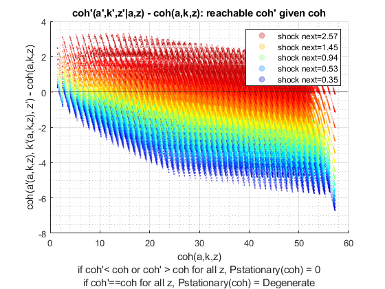 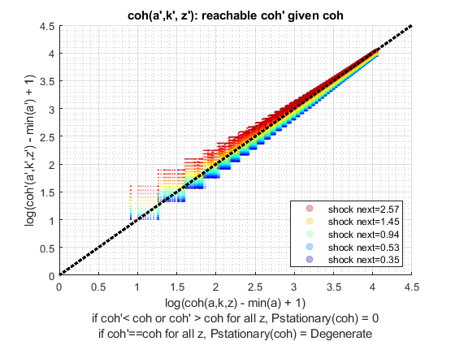 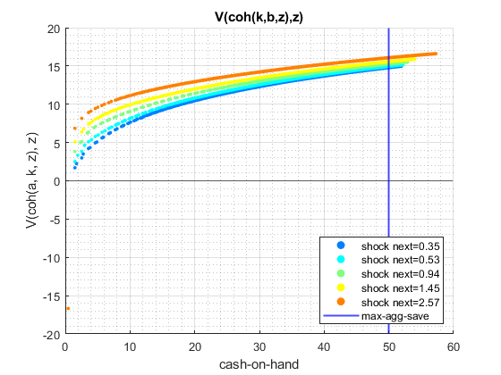 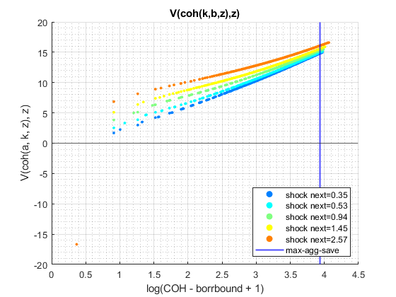  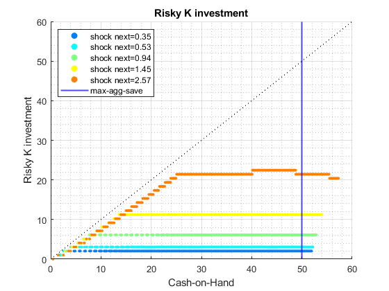 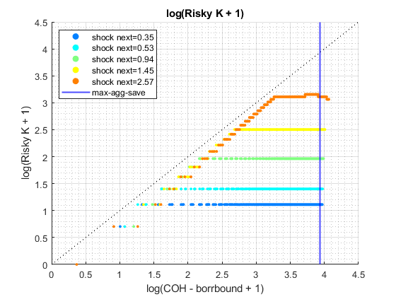 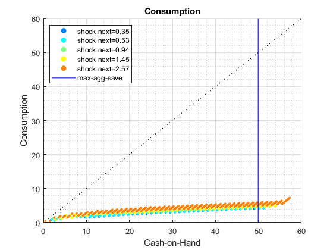 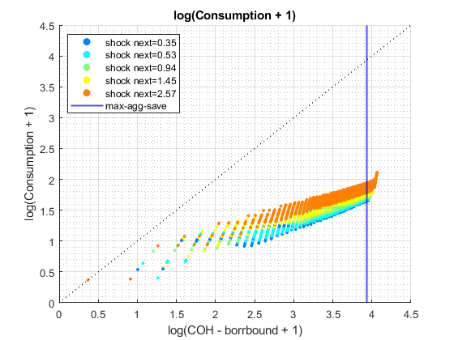
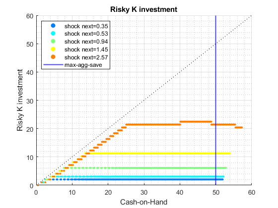 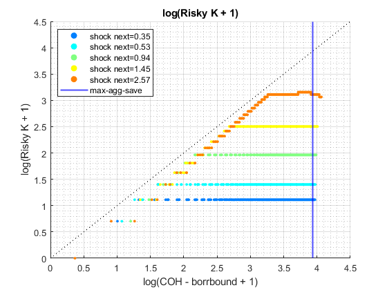 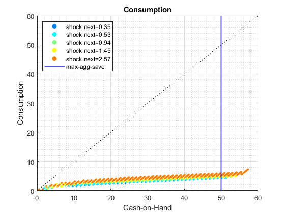 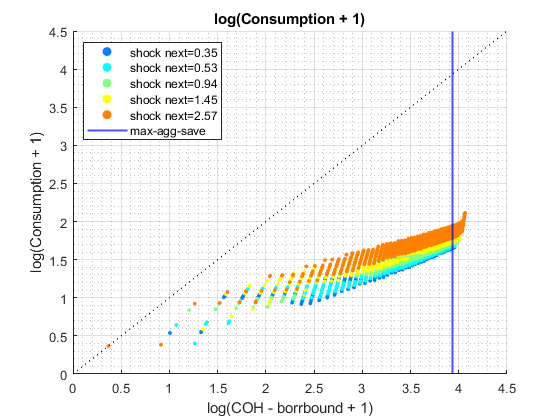 end
ans =
Map with properties:
Count: 11
KeyType: char
ValueType: any